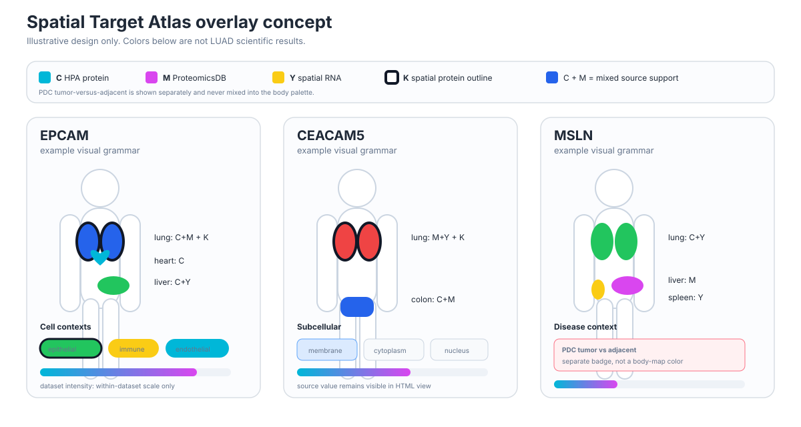

LUAD spatial overlay design vignette
Illustrative design review only. The values and source combinations below are intentionally synthetic.
Scientific rule: body colors encode categorical support. Quantitative intensity is displayed only inside one dataset at a time.
Source palette
C HPA protein
M ProteomicsDB
Y spatial RNA
K spatial protein outline
C+M example
C+Y example
M+Y example
EPCAM example
Body / organs

Generated reports use the same schematic SVG language but derive states from the saved evidence bundle.
Organ evidence cards
Lung
● C+M K outline
Liver
● C+Y
Heart
● C
Kidney
● unknown
Cell contexts
epithelial
immune
endothelial
fibroblast
Subcellular
membranecytoplasmnucleus
Dataset-resolved intensity
HBM-example · PhenoCycler
Bar length is rescaled within this dataset only. Source-scale values remain printed.
Disease context
PDC tumor vs adjacentShown as a separate disease-context badge. It never changes the whole-body positivity color.